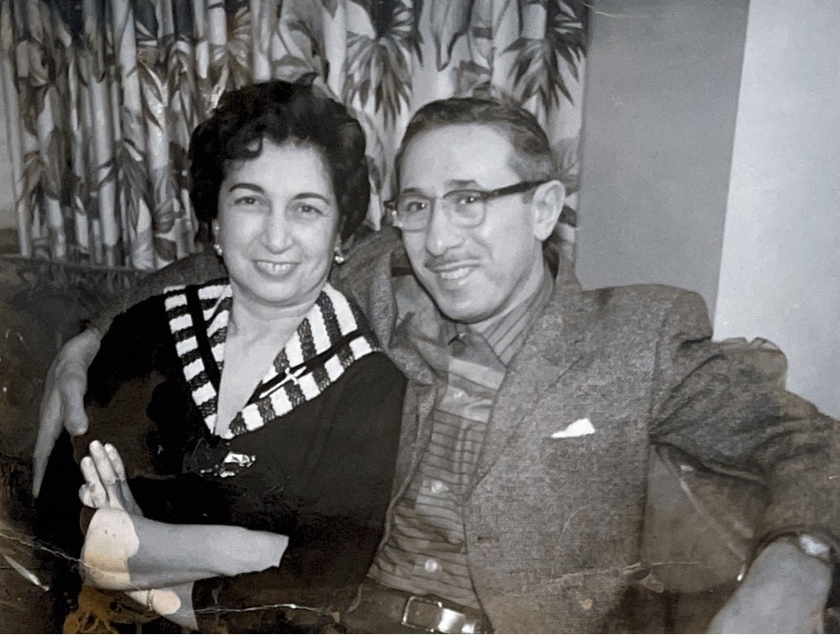
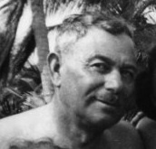

Rachel Ressman Beilen/Bailin
1865–1954
The eldest. Crossed in 1903 with her children after David Beilen came ahead; raised the Bailin branch in Chicago after his death.
From a tailor's bench in Nikolief to Appleton storefronts, Chicago apartments, an ocean crossing on the Saxonia, and four generations to a woman in Phoenix, Arizona — every story leading, somehow, to you.



Long before any of us were here, there was a tailor in a Russian town called Nikolief, or Nikolaev, who made uniforms for the Tsar's army. His name was David Moses Ressman, and he would whip his children to say their prayers, then have them help him sew. His wife was Hinda Pessin — daughter of a chazan and shochet, sister of a magid, a storyteller. She came from a learned family.
Hinda was deaf. She had been blinded in one eye as a girl when a kite struck her face during play. As a young woman, Cossacks had clubbed her about the head, and that may have had something to do with the deafness too. But she carried thirteen children, seven of whom lived, and she kept the family together long enough to send them, one by one, across the ocean to a country none of them had ever seen.
The first to make the journey was Ed Ressman — David Moses's brother — who landed in Chicago, then moved north to Appleton, Wisconsin, where he started the first synagogue in the town inside his own home. He sent for the others. He sent a ticket to his niece Rebecca, but Rebecca gave hers to her fiancé Isadore Bahcall, and Isadore came over instead and married her later. He went into Ed's scrap business, and that scrap business eventually became I. Bahcall, Inc., which still operates in Appleton today.
In 1902, Abram and Joseph Ressman crossed with their wives and children. In 1903, the rest came — David Moses and Hinda themselves, with Rachel and her children. The Ressmans traveled tourist class. Rachel and her children traveled steerage. During the voyage, the children were passed up over a gate to spend a little time with their grandparents. The boat may have been called the Saxonia. It landed in Baltimore. From there, they took the train to Chicago.
They founded a company called Acme Manufacturing that made parts of suits, but there was so much fighting within the family that the business didn't last. Every Ressman brother worked in the tailoring trade. Rachel scrubbed floors for fifty cents apiece. They were tired and they were poor and they were here, and that's where this story actually begins.
The detailed family knowledge document corrects an important point: David Moses and Hinda had thirteen children, but seven lived, and Leon belongs inside this core Ressman line.
The eldest. Crossed in 1903 with her children after David Beilen came ahead; raised the Bailin branch in Chicago after his death.
Married Jennie Joseph. Their seven daughters stayed mostly in the Chicago area, except Lottie, who settled in Neenah, Wisconsin.
A tailor in Odessa before immigration. The scanned history says he and Celia had no children; later he married Carrie Cohen.
Married Ida Cohen. The expanded branch adds Jeanette, David, Esther, and Harry Ressman.
Gave her passage ticket to Isadore Bahcall, then married him in Appleton, where the Bahcall business line grew.
Moved to Appleton on his honeymoon with Sarah Spector and built Ressman's Clothiers across generations.
No longer an uncertain outside branch. The scanned history names Leon as the youngest surviving child of David Moses and Hinda.
Eight generations, traced from a tailor in Nikolief to a woman in Phoenix. Every name here is a person whose story made yours possible.
The moments your great-grandparents would have told you about, if they could have. Click any card to read the full account.
Faces, streets, storefronts, records, and community landmarks gathered from the picture folder.





Tailors, scrap dealers, junk peddlers, dressmakers, dry cleaners, clothiers. The family was always making something.
The emotional story and the working genealogy belong side by side: preserved records and the open questions that still deserve careful checking.
Joseph Ressman's registration is preserved as a record image in the archive.

These are not loose ends to hide; they are the next invitations for better sources.
Forebears, cousins, in-laws, business partners, and the people whose names still need more source work.
You're the reason any of this matters. The Ressmans crossed an ocean, the Vanetskys peddled junk on the south side of Chicago, Sylvia broke her knee falling off a porch in Pontiac and never let it slow her down — all of it folding forward, generation by generation, until it folded into you. And now into Jacob and Landon, who carry the line forward, and Ozzie, who carried his place in the family with all the love a dog can hold.
You carry Hinda's resilience and Rose's warmth and Sylvia's quiet, steady strength. We see it. We've always seen it.
Happy Mother's Day.
{kind=link}
{kind=link}